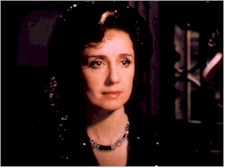

Contents | Features | Reviews | News | Archives | Store |
 |
|
| Movie Credits | Buy It! |
Life is Beautiful
Review by Elias Savada
Posted 30 October 1998
| Directed by Roberto Benigni. Starring
Roberto Benigni, Nicoletta Braschi, Written by Vincenzo Cerami |
1939, Arezzo, Italy. To this small Tuscan municipality arrives our hero, an non-observing Italian Jew, with his poetic sidekick Ferruccio (Sergio Bustric), having already been mistaken for a prince when their automobile loses its brakes. A forced stop and a blink later allows Guido the fortuitous rescue of a damsel in a dress. A walk around town, looking for work (eventually serving tables at his uncle’s elegant Grand Hotel), imparts our student of observation snippets of information on its inhabitants. Like a invasion of boomerangs, these nuggets of information (a tossed key, some hat tricks, an Offenbach opera, a riddle-obsessed German doctor, et al) return to delightful use in Benigni’s thoughtful script (co-written with Vincenzo Cerami).
He literally falls for rescued damsel Dora (Nicoletta Braschi, star of many of Benigni’s other films), when he crashes his bicycle into the young school teacher. After a protracted series of courtship encounters on Guido’s part, he ultimately learns she is already betrothed to town fascist Rodolfo (Amerigo Fontani). The wily yet clumsy Guido proves himself the better man at her engagement party, his spirit soaring as she begs her suitor to take her away. Rodolfo ends up with egg on his face (again) while Dora rides off with the man she loves. The fairy tale jump cuts several years as the film’s first hour comes to an end and the war drawing to a close. The family, now including son Giosué/Joshua (Giorgio Cantarini), is reluctantly forced to consider the realities of the racial laws of the time when Guido, his son, and his uncle are forced into cattle cars. Stunned and alone, Dora, a gentile, adds a dramatic twist with a defiant gesture at the railway station.
Perhaps a little too melodramatic as the setting moves from sunny countryside to the grey landscape of barracks life, although Benigni straddles the fence with deft humor and a smile on his face. Into this unimaginable, barren world, the father speaks to the naïve boy of points to be earned and contests to be won as the family is torn asunder. Far-fetched, sure, but when a German officer asks for a volunteer to interpret for him, Guido immediately steps forward and "translates" into Italian instead the rules of his fancied game, not only for his child, but for the other startled prisoners who listen with slackened faces. The shtick continues through to the contrived and obvious conclusion, never disrespectful and guaranteed to leave a lump in your throat.
Vittorio De Sica dealt with a similar theme more than 20 years ago with his extraordinary The Gardens of the Finzi-Continis, about a wealthy Jewish family that carries false hopes too long and are forced to tragic ends at a death camp. Benigni now makes a bold attempt for another Italian Oscar. He’s on solid footing and his celebration elevates the human spirit. Life Is Beautiful is beautiful.
Contents | Features | Reviews | News | Archives | Store
Copyright © 1999 by Nitrate Productions, Inc. All Rights Reserved.